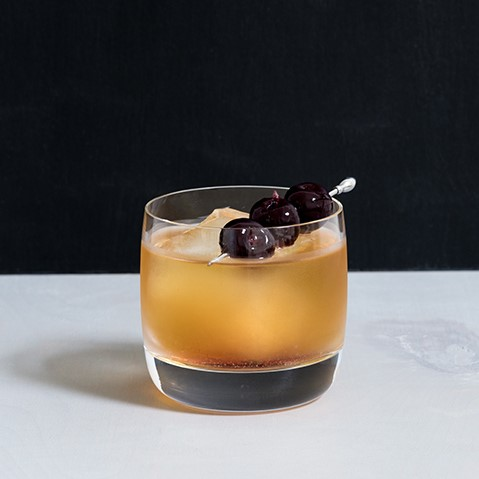

SUPERB COQUETEL: Um enganoso drink de cerveja amanteigada.
Aqui em casa a gente tem a tradição de celebramos tudo o que é ótimo sobre o exagero brasileiro em um único dia, geralmente assistindo um Masterchef. principalmente na final. A comida é boa. Este ano, decidi que precisávamos de um coquetel edição especial para acompanhar, apresentando o Superb!
Receita
SUPERB COQUETEL: Um enganoso drink de cerveja amanteigada.
Ingredientes: 60ml de rum, 25ml de licor de caramelo, 15ml de licor de pêssego, 15ml de licor de gengibre e cerejas ao mascharino para decoração.
Modo de fazer: Adicione todos itens no copo com gelo. Mexa bem. Adicione gelo. Decore com as cerejas.
Retornar
